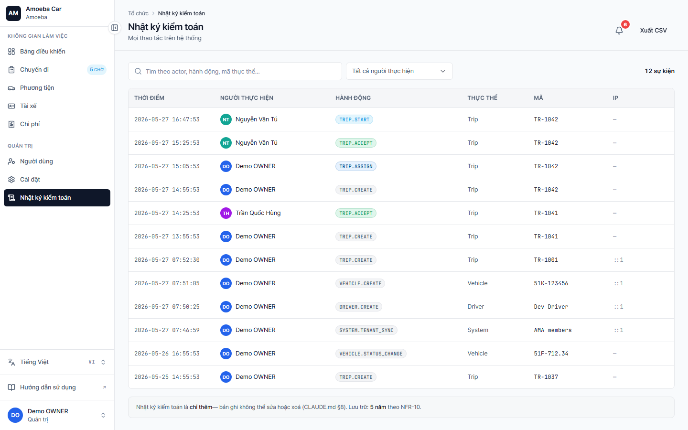

Nhật ký kiểm toán (Audit Log)
- URL
/audit- Quyền
- Chỉ Admin xem được
- Đặc tính
- Append-only — không thể sửa hoặc xoá. Lưu 5 năm (cấu hình ở /settings).
Audit log ghi lại mọi thao tác làm thay đổi dữ liệu: ai tạo/sửa/xoá trip nào, ai đổi vai trò user, ai sửa cấu hình hệ thống. Đây là nguồn duy nhất để truy vết khi có vấn đề.

Các cột hiển thị
| Cột | Mô tả |
|---|---|
| Thời điểm | Timestamp ISO, múi giờ Asia/Ho_Chi_Minh |
| Người thực hiện | Avatar + tên user, hoặc "system" nếu cron tự động |
| Hành động | Badge mã sự kiện (TRIP.CREATE, EXPENSE.SUBMITTED, ROLE_SYNC, …) |
| Thực thể | Loại đối tượng (Trip, Vehicle, User, Expense, …) |
| Mã | ID hoặc tham chiếu (vd TR-1042, biển số xe) |
| IP | IP request — giúp phát hiện thao tác bất thường |
Màu badge theo loại hành động
Màu badge suy ra từ từ khóa trong mã hành động:
- 🟢 Success — mã chứa
ACCEPT - 🔵 Accent — mã chứa
ASSIGNhoặcUPDATE - 🟣 Info — mã chứa
STARThoặcEND - 🟡 Warning — mã chứa
ALERThoặcWARN - 🔴 Danger — mã chứa
REJECT,CANCELhoặcDELETE - ⚪ Neutral — còn lại (
CREATE,SUBMITTED,OIL_RESET,ROLE_SYNC,PROVISIONED…)
Bộ lọc
- Tìm theo actor / hành động / mã thực thể — gõ vào ô search
- Lọc theo người thực hiện — dropdown chỉ hiện user nào đã từng tạo event
Xuất CSV
Bấm "Xuất CSV" ở góc trên phải để tải toàn bộ event (kèm bộ lọc) — định dạng phù hợp cho phân tích bằng Excel/Python.
🔒
Không thể xoá audit log — chỉ DB admin với quyền raw SQL mới làm được. Đây là tính năng compliance bắt buộc.
Các mã event thường gặp
| Mã | Ý nghĩa |
|---|---|
TRIP.CREATE | Tạo chuyến mới |
TRIP.UPDATE | Sửa thông tin chuyến |
TRIP.ASSIGN | Admin gán driver + vehicle |
TRIP.REASSIGN | Admin gán lại sau khi tài xế từ chối |
TRIP.ACCEPT | Tài xế chấp nhận |
TRIP.REJECT | Tài xế từ chối (kèm lý do) |
TRIP.START | Tài xế bấm "Bắt đầu" |
TRIP.END | Tài xế bấm "Kết thúc" |
TRIP.CANCEL | Hủy chuyến (Admin hoặc người tạo) |
EXPENSE.SUBMITTED | Ghi nhận chi phí mới (mọi chi phí tự động duyệt — không có bước phê duyệt) |
DRIVER.CREATE / DRIVER.UPDATE | Tạo / sửa hồ sơ tài xế |
VEHICLE.CREATE / VEHICLE.UPDATE / VEHICLE.DELETE | Tạo / sửa / xoá xe |
VEHICLE.OIL_RESET | Reset chu kỳ thay dầu sau khi đã thay |
SETTINGS.UPDATE | Đổi cấu hình hệ thống |
MAINTENANCE.ACKNOWLEDGED | Admin xác nhận đã xử lý alert bảo dưỡng |
MAINTENANCE.CRON_EVALUATED | Cron đánh giá lịch bảo dưỡng hằng ngày (system) |
PROVISIONED | Tạo user lần đầu khi đăng nhập (system) |
ROLE_SYNC | Auto-sync vai trò khi user login (system) |